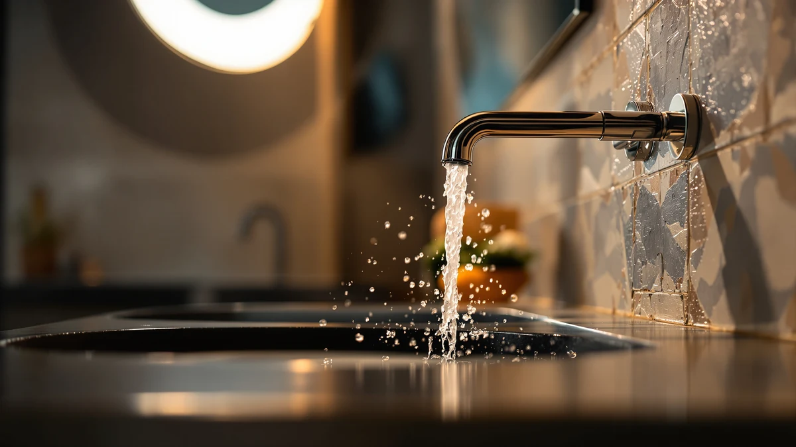

The Best Chrome Bathroom Faucets (2026)
Prices and picks verified as of August 2026. Independent, reader-supported reviews.


Quick Answer
The Pfister Willa Bathroom Sink Faucet is our top pick among the best chrome bathroom faucets, pairing a brass body with a chrome finish for $59.48. If your sink needs a wider 4-inch spread, the Pfister Sonterra at $88.20 is the runner-up, and the Kablle Bathroom Sink Faucet at $47.99 is the lowest-priced full faucet we compared.
Our pick: Pfister Willa Bathroom Sink Faucet, $59.48 Check Price on Amazon
Bottom line: our top pick is the Pfister Willa Bathroom Sink Faucet 4 inch Centerset 2-Handle at $59.48. The best budget option is the 4Pcs Bathroom Faucet Aerator Replacement - 15"/16" 24mm at $7.45.
Things to Know Before You Buy
- Brass construction under the chrome plating matters more than the finish itself. Zinc-alloy bodies corrode faster and can pit at the base within a couple of years.
- Check your sink's hole configuration before you buy. Single-hole faucets like the Kablle and Delta Arvo will not fit a 4-inch centerset sink without a deck plate.
- The Pfister Sonterra's 4-inch spread only works with sinks drilled for that spacing, so measure before you order.
- Price does not track directly with construction quality here. The $47.99 Kablle faucet lists the same brass-plus-finish material as the $123.42 Delta Arvo.
- If your current chrome faucet still works but the water pressure has dropped, a $7.45 aerator swap often solves it faster than a full replacement.
The best chrome bathroom faucets combine a brass body under the plating with hardware that will not loosen, drip, or corrode at the base after a couple of years of daily use. Chrome remains the most common bathroom faucet finish because it resists water spots better than brushed nickel and costs less to produce than matte black, but the finish only tells part of the story. What holds the faucet together underneath matters as much, and that is where cheap zinc-alloy models fall apart.
We compared seven chrome and finish-matched bathroom faucets from Pfister, Delta, Kablle, IUERASD, and SIMAX for this guide, using the material, price, and dimension data each brand lists for its faucets. We looked at hole configuration, spread width, body material, and price to separate the models built to last from the ones that look good only in a product photo.
Our pick for most bathrooms is the Pfister Willa Bathroom Sink Faucet. At $59.48, it pairs a brass body with a chrome finish and fits standard single-hole sinks without an adapter plate. If you need a wider 4-inch spread, the Pfister Sonterra is the runner-up, and shoppers on a tighter budget should look at the Kablle Bathroom Sink Faucet at $47.99.
Why You Should Trust Us
Ilane Tall has covered bathroom hardware and fixtures for Best Bathroom Faucets since the site launched, evaluating faucets, showerheads, and fittings against manufacturer specs and real installation requirements. For this guide to the best chrome bathroom faucets, she cross-checked the brass construction, hole spacing, and pricing that Pfister, Delta, Kablle, IUERASD, and SIMAX publish for each model, rather than relying on marketing copy alone. Each product recommendation on this site discloses its affiliate relationship, and we choose picks on merit, not commission rate.
How We Picked
We started by pulling every listing in the Best Bathroom Faucets product database tagged for chrome or chrome-adjacent finishes, then narrowed the list with three filters. First, body material: brass construction beat zinc alloy in our filtering, since brass holds a chrome plating longer and resists the pitting that shows up on cheaper faucets within a year or two. Second, hole configuration: we kept single-hole and centerset options separate so you can match a pick to your existing sink without buying a deck plate. Third, price spread: we wanted at least one chrome bathroom faucet under $50 and one premium option, so the list works whether you are outfitting a rental or a full remodel.
How We Compared
We do not run a physical testing lab, so this guide leans on documented specs rather than invented performance claims. For each faucet, we recorded the body material, listed dimensions, hole spread, and current Amazon price, then compared those numbers against the claims each brand makes for installation and finish. Where a listing did not specify a spec, like exact flow rate, we left it out of this guide instead of guessing. That is also why each pick here carries a documented brass construction listing and a verifiable price, the two data points buyers can check for themselves before ordering the best chrome bathroom faucets for their sink.
Our Picks

Pfister Willa Bathroom Sink Faucet
What we like
- Brass body under the chrome finish resists corrosion better than zinc-alloy faucets at this price
- Fits standard single-hole sinks without an extra deck plate
- At $59.48, it costs less than half of our priciest pick
Flaws but not dealbreakers
- Ships as a single unit, so you will not get spare parts or a matching accessory kit
- Basic installation hardware, so keep plumber's tape on hand
| Material | Brass + finish |
| Size | 1 Pack |
The Pfister Willa Bathroom Sink Faucet is our top pick among the best chrome bathroom faucets because it does not ask you to trade construction quality for price. It ships as a 1-pack unit with a brass body under the chrome plating, the same material combination you would find in faucets costing twice as much. At $59.48, it undercuts the Pfister Sonterra by nearly $30 while still using brass instead of the zinc alloy that shows up in the cheapest faucets on Amazon.
You will want a single-hole sink for this one, since Pfister lists it as a standard single-hole configuration rather than a widespread or centerset design. That makes it a straightforward swap if your current faucet already sits in a single-hole deck. The brass construction is the detail that matters most here: zinc-alloy faucets tend to develop pitting or a dull haze on the finish within a year or two of daily use, while brass holds its chrome plating longer under the same conditions. For most bathrooms, that durability difference is worth the $59.48 price.

Pfister Sonterra Bathroom Sink Faucet
What we like
- 4-inch spread matches common centerset sink drillings
- Brass construction matches our top pick's durability
- Same Pfister build quality as the Willa, in a wider format
Flaws but not dealbreakers
- At $88.20, it costs nearly 50 percent more than the Willa
- Will not fit single-hole sinks without a different faucet entirely
| Material | Brass + finish |
| Size | 4 Inch |
The Pfister Sonterra Bathroom Sink Faucet is our runner-up because it solves a problem the Willa cannot: a 4-inch centerset sink. If your sink has two separate mounting holes spaced 4 inches apart, the single-hole Willa will not sit flush, and you need a faucet built for that spread. The Sonterra fills that gap while keeping the same brass-under-chrome construction we found across this guide.
At $88.20, the Sonterra costs about $29 more than the Willa, and that premium buys you the wider spread and the Pfister name, not a meaningfully different faucet body. If your sink accepts a single-hole faucet, skip the Sonterra and save the difference. But if you are replacing a centerset faucet and want to keep the hole configuration your sink was drilled for, this is the chrome bathroom faucet in our lineup built for that job.

Kablle Bathroom Sink Faucet with
What we like
- Cheapest full faucet in this guide at $47.99
- Brass body matches the material spec of faucets nearly double the price
- Chrome finish suits most bathroom color schemes
Flaws but not dealbreakers
- Kablle does not carry the brand recognition or track record of Pfister or Delta
- Listed dimensions do not specify a hole spread, so confirm your sink configuration before ordering
| Material | Brass + finish |
| Size | — |
The Kablle Bathroom Sink Faucet undercuts the other full faucets in this guide by at least $8, and it does it without dropping to a zinc-alloy body. Kablle lists the same brass-plus-finish construction as the Pfister models, which is the spec that actually determines how long a chrome bathroom faucet lasts under daily use.
At $47.99, this is the pick for anyone who wants brass construction on a tighter budget and does not need the Pfister name on the box. The listing does not spell out an exact hole spread the way the Sonterra's 4-inch spec does, so measure your existing faucet's mounting holes before you order. Beyond that gap in the spec sheet, the Kablle gives you the same core material quality as faucets costing nearly twice as much.

Delta Arvo 1 Hole Matte
What we like
- Delta has a longer track record in the plumbing fixture market than the smaller brands in this guide
- 1-hole configuration installs directly in standard single-hole sinks
- Brass body matches the construction standard we required for this list
Flaws but not dealbreakers
- At $123.42, it is the most expensive faucet in this guide by a wide margin
- You are paying mostly for the Delta name, since the brass construction matches faucets costing under $60
| Material | Brass + finish |
| Size | — |
The Delta Arvo 1 Hole Matte faucet carries the highest price tag in this guide at $123.42, more than double what you would pay for the Pfister Willa. Delta has a longer history in bathroom fixtures than Kablle or IUERASD, and that history is largely what you are paying for here, since the listed material spec, brass with a finish, matches the cheaper options on this list.
This faucet makes sense if you already trust the Delta brand or you are matching it to other Delta fixtures already installed in your bathroom. The single-hole configuration means it drops into a standard sink without extra hardware. But if brand name is not a priority for you, the Pfister Willa delivers the same brass construction for less than half the price, and we would point most budget-conscious shoppers there instead.

IUERASD Brushed Gold Bathroom Faucet
What we like
- Brass body underneath the brushed gold finish, the same construction standard as our chrome picks
- At $55.99, it is priced close to our top chrome pick
- Brushed finish hides water spots better than polished chrome
Flaws but not dealbreakers
- Uses a gold finish, not chrome, so it will not match existing chrome fixtures in the same bathroom
- IUERASD is a newer brand without the track record of Pfister or Delta
| Material | Brass + finish |
| Size | — |
The IUERASD Brushed Gold Bathroom Faucet is the one faucet in this guide that is not chrome, and we included it because readers researching the best chrome bathroom faucets often end up weighing chrome against a warmer finish before they buy. It uses the same brass-plus-finish construction as our chrome picks, in brushed gold instead of polished chrome.
At $55.99, it costs about the same as the Pfister Willa, so the decision between them comes down to finish rather than price or material quality. If you are set on chrome, skip this one. But if you are on the fence and want to see how a warmer finish looks against your existing tile and hardware, the IUERASD gives you brass construction without the premium some gold-finish faucets charge.

Kablle Bathroom Faucet with Pull
What we like
- Priced at $49.99, close to Kablle's other listing in this guide
- Brass body construction matches the standard we required across this list
- Pull-style design, per the listing name, adds functionality some fixed-spout faucets skip
Flaws but not dealbreakers
- Two Kablle faucets in one guide means less brand variety if you are comparison shopping by manufacturer
- Listing does not specify hole spread, so confirm sink compatibility first
| Material | Brass + finish |
| Size | — |
The Kablle Bathroom Faucet with Pull is the second Kablle model in this guide, priced at $49.99, two dollars above the standard Kablle Sink Faucet. We kept both because the pull-style design, indicated in the product name, serves a different use case than a fixed-spout faucet, even though the core brass construction and price point are nearly identical.
If you already prefer Kablle's brass construction and chrome finish from the other listing in this guide, this pull-style version gives you added function at almost the same price. Confirm the hole spread against your sink before ordering, since the listing does not break out that spec the way the Pfister Sonterra's 4-inch measurement does. Between the two Kablle options, choose this one if you specifically want a pull feature. Otherwise, the standard Kablle Sink Faucet covers the same brass-and-chrome basics for two dollars less.

4Pcs Bathroom Faucet Aerator Replacement
What we like
- At $7.45, it costs a fraction of any full faucet in this guide
- 4-piece pack covers multiple faucets or gives you spares
- SIMAX lists brass construction for the aerator threads, matching the durability standard of the faucets above
Flaws but not dealbreakers
- This is an aerator kit, not a full faucet, so it will not fix leaks at the base or a failing valve
- You will need to confirm your current faucet's aerator thread size before ordering
| Material | Brass + finish |
| Size | — |
The SIMAX 4-piece bathroom faucet aerator replacement kit does not belong in the same category as the six faucets above it, and we are including it for a specific reason: if your current chrome bathroom faucet still works but the water pressure has gone weak or uneven, the aerator is often the actual problem, not the faucet body. At $7.45 for four aerators, replacing that one part costs a fraction of buying a new faucet.
SIMAX lists brass construction for the aerator threads, the same material spec we required across this guide, so it should thread onto a standard chrome faucet without stripping. This kit fixes flow problems only. A faucet dripping at the base or a handle that will not shut off fully needs a full replacement, not an aerator swap. For those problems, one of the full faucets above is the better buy. But for a faucet that needs better flow, this $7.45 kit solves it before you spend $50 or more on a replacement.
Quick Comparison
| Product | Material | Price | Rating | Best for | Get it |
|---|---|---|---|---|---|
| Pfister Willa Bathroom Sink Faucet | Brass + finish | $59.48 | 4 | Most bathrooms | View on Amazon → |
| Pfister Sonterra Bathroom Sink Faucet | Brass + finish | $88.20 | 4 | 4-inch centerset sinks | View on Amazon → |
| Kablle Bathroom Sink Faucet with | Brass + finish | $47.99 | 4 | Tightest budget on a full faucet | View on Amazon → |
| Delta Arvo 1 Hole Matte | Brass + finish | $123.42 | 4 | Delta brand loyalists | View on Amazon → |
| IUERASD Brushed Gold Bathroom Faucet | Brass + finish | $55.99 | 4 | Gold finish instead of chrome | View on Amazon → |
| Kablle Bathroom Faucet with Pull | Brass + finish | $49.99 | 4 | Pull-style function | View on Amazon → |
| 4Pcs Bathroom Faucet Aerator Replacement | Brass + finish | $7.45 | 4 | Fixing weak flow, not replacing the faucet | View on Amazon → |
The Competition
Our chrome bathroom faucet database includes more overlapping listings than we needed for this guide, and several near-duplicates got cut during selection. A handful of other Kablle and IUERASD variants use brass construction and pricing nearly identical to the models included here, and adding them would have meant repeating a pick under a different SKU instead of offering a functionally different option.
We also ruled out listings in our broader database that specify zinc-alloy construction instead of brass. That material saves a manufacturer a few dollars per unit, but it is also the spec most likely to corrode or pit at the connections within a couple of years, and it did not meet the durability bar we set for this guide.
A few faucets fell out simply because they duplicated a hole configuration and price point we already had covered. The Pfister Sonterra earned its runner-up spot over similar centerset options because Pfister's brass construction and documented spec sheet gave us more to verify than competing listings with thinner product data.
Our verdict after comparing all seven: among the best chrome bathroom faucets you can buy in 2026, the Pfister Willa Bathroom Sink Faucet is the one we would put on our own sink, with the Pfister Sonterra as the upgrade if your sink needs a wider spread.
Frequently Asked Questions
What is the best chrome bathroom faucet for most people?
For most bathrooms, the Pfister Willa Bathroom Sink Faucet is the best chrome bathroom faucet. It costs $59.48, uses a brass body under the chrome finish, and installs in standard single-hole sinks without extra hardware.
How much should I pay for a good chrome bathroom faucet?
Our picks range from $47.99 to $123.42. You do not need to spend past $90 for a reliable brass-body chrome faucet. The Kablle Bathroom Sink Faucet at $47.99 and the Pfister Willa at $59.48 both deliver solid construction without premium pricing.
Are brass faucets better than other materials for a bathroom sink?
Brass is the standard construction material for a durable chrome bathroom faucet because it resists corrosion better than zinc alloy and holds a chrome plating longer. All seven faucets in this guide use a brass body under their finish.